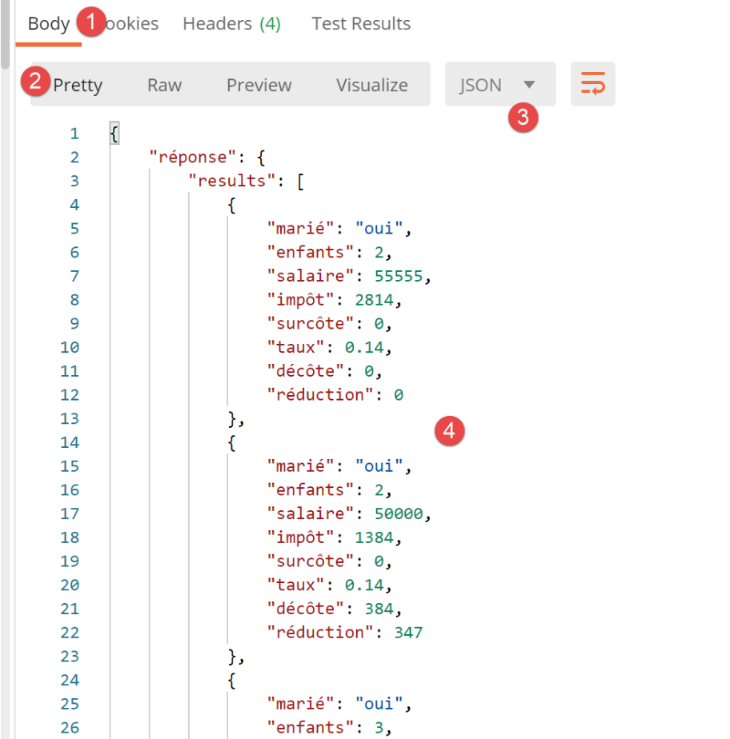

28. 应用练习：第 10 版
28.1. 简介
在税款计算服务器的客户端示例中，如果需要处理 N 名纳税人，线程会依次发送 N 个请求。此处的思路是发送一个包含所有 N 名纳税人的请求。对于每名纳税人，都需要发送 [marié, enfants, salaire] 信息。可以将这些信息作为参数发送：
- 作为 URL 的参数。这样会得到一个冗长且意义不大的 URL；
- 在请求正文（body）中。我们知道，对于使用浏览器的用户而言，该正文是隐藏的；
在两种情况下，均可使用 [GET] 或 [POST] 请求。我们将使用 POST 请求，并将参数封装在 HTTP 请求的正文中。
客户端/服务器架构未发生变化：

28.2. Web 服务器

文件 [http-servers/05] 最初是通过复制文件 [http-servers/02] 获得的。 我们回到客户端与服务器之间的 jSON 数据交换。我们已经看到，从 jSON 切换到 XML 非常简单。
28.2.1. 配置
[config, config_database, config_layers]的配置与之前版本类似。此处不再赘述。
28.2.2. 主脚本 [main]
[main]脚本与我们复制的[http-servers/02]文件夹中的脚本完全相同。唯一不同之处在于：
# 首页 URL
@app.route('/', methods=['POST'])
@auth.login_required
def index():
…
- 第2行：现在URL是通过POST生成的；
28.2.3. 控制器 [index_controller]
[index_controller] 控制器演变如下：
# 导入依赖项
import json
from flask_api import status
from werkzeug.local import LocalProxy
def execute(request: LocalProxy, config: dict) -> tuple:
# 依赖项
from ImpôtsError import ImpôtsError
from TaxPayer import TaxPayer
# 获取帖子正文 - 等待一个字典列表
msg_erreur = None
list_dict_taxpayers = None
# POST 的正文 jSON
request_text = request.data
try:
# 将其转换为字典列表
list_dict_taxpayers = json.loads(request_text)
except BaseException as erreur:
# 记录错误
msg_erreur = f"le corps du POST n'est pas une chaîne jSON valide : {erreur}"
# 列表是否不为空？
if not msg_erreur and (not isinstance(list_dict_taxpayers, list) or len(list_dict_taxpayers) == 0):
# 记录错误
msg_erreur = "le corps du POST n'est pas une liste ou alors cette liste est vide"
# 是否有一个字典列表？
if not msg_erreur:
erreur = False
i = 0
while not erreur and i < len(list_dict_taxpayers):
erreur = not isinstance(list_dict_taxpayers[i], dict)
i += 1
# 错误？
if erreur:
msg_erreur = "le corps du POST doit être une liste de dictionnaires"
# 错误？
if msg_erreur:
# 向客户端发送错误响应
résultats = {"réponse": {"erreurs": [msg_erreur]}}
return résultats, status.HTTP_400_BAD_REQUEST
# 逐个检查 TaxPayers
# 起初没有错误
list_erreurs = []
for dict_taxpayer in list_dict_taxpayers:
# 根据 dict_taxpayer 生成 TaxPayer
msg_erreur = None
try:
# 接下来的操作将排除参数不
# TaxPayer 类的属性，以及其值
# 不正确的情况
TaxPayer().fromdict(dict_taxpayer)
except BaseException as erreur:
msg_erreur = f"{erreur}"
# 字典中必须包含某些键
if not msg_erreur:
# 字典中必须包含键 [marié, enfants, salaire]
keys = dict_taxpayer.keys()
if 'marié' not in keys or 'enfants' not in keys or 'salaire' not in keys:
msg_erreur = "le dictionnaire doit inclure les clés [marié, enfants, salaire]"
# 有错误？
if msg_erreur:
# 在 TaxPayer 本身中发现了错误
dict_taxpayer['erreur'] = msg_erreur
# 将 TaxPayer 添加到错误列表中
list_erreurs.append(dict_taxpayer)
# 已处理所有纳税人——是否有错误？
if list_erreurs:
# 向客户发送错误响应
résultats = {"réponse": {"erreurs": list_erreurs}}
return résultats, status.HTTP_400_BAD_REQUEST
# 无错误，可以继续处理
# 从税务机关获取数据
admindata = config["admindata"]
métier = config["layers"]["métier"]
try:
# 逐个处理 TaxPayer
list_taxpayers = []
for dict_taxpayer in list_dict_taxpayers:
# 计算税款
taxpayer = TaxPayer().fromdict(
{'marié': dict_taxpayer['marié'], 'enfants': dict_taxpayer['enfants'],
'工资': dict_taxpayer['salaire']})
métier.calculate_tax(taxpayer, admindata)
# 将结果保存为字典
list_taxpayers.append(taxpayer.asdict())
# 将响应发送给客户端
return {"réponse": {"results": list_taxpayers}}, status.HTTP_200_OK
except ImpôtsError as erreur:
# 向客户端发送错误响应
return {"réponse": {"erreurs": f"[{erreur}]"}}, status.HTTP_500_INTERNAL_SERVER_ERROR
- 第 9 行：控制器接收：
- 来自客户端的请求 [request]；
- 服务器的配置 [config]；
- 第14-18行：提取POST的请求主体。封装在HTTP请求主体中的参数可以采用多种编码方式。我们之前已经遇到过其中一种：[x-www-form-urlencoded]。 这里我们将使用另一种编码：jSON；
- 第18行：[request.data] 可用于提取请求 HTTP 的正文（body）。 此处获取的是文本，且我们知道该文本来自 jSON，它代表了一个字典列表 [marié, enfants, salaire]；
- 第19-24行：提取该字典列表；
- 第22-24行：若jSON的提取出现问题，则记录错误；
- 第26-28行：若发现获取的对象不是列表或为空列表，则记录错误；
- 第29-38行：若成功获取列表，则验证其确为字典列表；
- 第 40-43 行：若出现错误，则在此终止并向客户端发送错误响应；
- 第 45-69 行：现在检查每个字典：
- 它们必须包含键 [marié, enfants, salaire]；
- 它们必须能够构建一个有效的 [TaxPayer] 对象；
- 第65-69行：若在某个字典中检测到错误，则将其记录在该字典中，并关联键值‘erreur’；
- 第 72-75 行：包含错误的字典已被汇总到列表 [list_erreurs] 中。如果该列表不为空，则将其发送给客户端作为错误响应；
- 第 77 行：至此，已知可根据客户端发送的请求正文创建类型为 [TaxPayer] 的对象列表；
- 第84-91行：处理接收到的字典列表；
- 第 86 行：基于一个字典，创建一个 [TaxPayer] 对象；
- 第 89 行：计算该 [TaxPayer] 的税额；
- 第 91 行：由于税额计算，[taxpayer] 已被修改。将其转换为字典并添加到结果列表中；
- 第 93 行：将该结果列表发送给客户端；
28.2.4. 服务器测试
我们将使用 Postman 客户端测试服务器：
- 启动Web服务器SGBD和邮件服务器[hMailServer]；
- 启动 Postman 客户端及其控制台（Ctrl-Alt-C）；

- 在 [1] 中：发送请求 [POST]；
- 在 [2] 中：服务器返回的 URL；
- 转换为 [3]：请求主体 HTTP；
- 在 [5] 中：指定该正文应以字符串 jSON 的形式发送；
- 在 [4] 中：切换至 [raw] 模式，以便复制/粘贴字符串 jSON；
- 在 [6] 中：粘贴从不同版本的 [résultats.json] 文件中提取的字符串 jSON。随后，针对每位纳税人仅保留 [marié, salaire, enfants] 的属性；

- 在 [7] 中，查看 Postman 客户端将发送给服务器的 HTTP 头部；
- 在 [8] 中，可以看到它将发送一个 [Content-Type] 头部，告知服务器该请求包含一个编码为 jSON 的请求体。这源于之前选择的 [5]；

- 在 [9-12] 中：将服务器所需的标识符放入请求中；
发送此请求。服务器的响应如下：

- 在 [3] 中，我们收到了来自 jSON 的数据；
- 在 [4] 中，显示纳税人的税款；
让我们在 Postman 控制台（Ctrl-Alt-C）中查看发生的客户端/服务器对话：
Postman客户端发送了以下文本：
- 第 1 行：向服务器发送 POST；
- 第2行：发送身份验证头HTTP；
- 第 3 行：客户端告知服务器将发送字符串 jSON，且该字符串长度为 824 字节（第 11 行）；
- 第13-69行：请求的jSON正文；
服务器向他返回了以下内容：
HTTP/1.0 200 OK
Content-Type: application/json; charset=utf-8
Content-Length: 1461
Server: Werkzeug/1.0.1 Python/3.8.1
Date: Tue, 28 Jul 2020 07:16:34 GMT
{"réponse": {"results": [{"marié": "oui", "enfants": 2, "salaire": 55555, "impôt": 2814, "surcôte": 0, "taux": 0.14, "décôte": 0, "réduction": 0}, {"marié": "oui", "enfants": 2, "salaire": 50000, "impôt": 1384, "surcôte": 0, "taux": 0.14, "décôte": 384, "réduction": 347}, {"marié": "oui", "enfants": 3, "salaire": 50000, "impôt": 0, "surcôte": 0, "taux": 0.14, "décôte": 720, "réduction": 0}, {"marié": "non", "enfants": 2, "salaire": 100000, "impôt": 19884, "surcôte": 4480, "taux": 0.41, "décôte": 0, "réduction": 0}, {"marié": "non", "enfants": 3, "salaire": 100000, "impôt": 16782, "surcôte": 7176, "taux": 0.41, "décôte": 0, "réduction": 0}, {"marié": "oui", "enfants": 3, "salaire": 100000, "impôt": 9200, "surcôte": 2180, "taux": 0.3, "décôte": 0, "réduction": 0}, {"marié": "oui", "enfants": 5, "salaire": 100000, "impôt": 4230, "surcôte": 0, "taux": 0.14, "décôte": 0, "réduction": 0}, {"marié": "non", "enfants": 0, "salaire": 100000, "impôt": 22986, "surcôte": 0, "taux": 0.41, "décôte": 0, "réduction": 0}, {"marié": "oui", "enfants": 2, "salaire": 30000, "impôt": 0, "surcôte": 0, "taux": 0.0, "décôte": 0, "réduction": 0}, {"marié": "non", "enfants": 0, "salaire": 200000, "impôt": 64210, "surcôte": 7498, "taux": 0.45, "décôte": 0, "réduction": 0}, {"marié": "oui", "enfants": 3, "salaire": 200000, "impôt": 42842, "surcôte": 17283, "taux": 0.41, "décôte": 0, "réduction": 0}]}}
- 第 1 行：请求成功；
- 第2行：服务器响应正文为字符串jSON。该字符串长度为1461字节（第3行）；
- 第7行：服务器的响应为jSON；
现在我们来测试一些错误情况。
情况 1：发送任意内容
POST / HTTP/1.1
Authorization: Basic YWRtaW46YWRtaW4=
Content-Type: application/json
User-Agent: PostmanRuntime/7.26.2
Accept: */*
Cache-Control: no-cache
Postman-Token: 47652706-9744-46a0-a682-de010e5406c0
Host: localhost:5000
Accept-Encoding: gzip, deflate, br
Connection: keep-alive
Content-Length: 3
abc
HTTP/1.0 400 BAD REQUEST
Content-Type: application/json; charset=utf-8
Content-Length: 125
Server: Werkzeug/1.0.1 Python/3.8.1
Date: Tue, 28 Jul 2020 07:43:27 GMT
{"réponse": {"erreurs": ["le corps du POST n'est pas une chaîne jSON valide : Expecting value: line 1 column 1 (char 0)"]}}
- 第13行：发送的字符串[abc]并非有效的jSON字符串（第3行）；
- 第 15 行：服务器返回 400 错误代码；
- 第 21 行：服务器的响应 jSON；
情况 2：发送一个有效的字符串 jSON，但该字符串不是列表
POST / HTTP/1.1
Authorization: Basic YWRtaW46YWRtaW4=
Content-Type: application/json
User-Agent: PostmanRuntime/7.26.2
Accept: */*
Cache-Control: no-cache
Postman-Token: 03b64735-9239-47b3-b92d-be7c9ebc7559
Host: localhost:5000
Accept-Encoding: gzip, deflate, br
Connection: keep-alive
Content-Length: 17
{"att1":"value1"}
HTTP/1.0 400 BAD REQUEST
Content-Type: application/json; charset=utf-8
Content-Length: 97
Server: Werkzeug/1.0.1 Python/3.8.1
Date: Tue, 28 Jul 2020 07:50:11 GMT
{"réponse": {"erreurs": ["le corps du POST n'est pas une liste ou alors cette liste est vide"]}}
情况 3：发送字符串 jSON，该字符串是一个列表，且其元素并非全是字典
POST / HTTP/1.1
Authorization: Basic YWRtaW46YWRtaW4=
Content-Type: application/json
User-Agent: PostmanRuntime/7.26.2
Accept: */*
Cache-Control: no-cache
Postman-Token: a1528a5f-777c-413f-b3be-7d4e9955b12a
Host: localhost:5000
Accept-Encoding: gzip, deflate, br
Connection: keep-alive
Content-Length: 7
[0,1,2]
HTTP/1.0 400 BAD REQUEST
Content-Type: application/json; charset=utf-8
Content-Length: 85
Server: Werkzeug/1.0.1 Python/3.8.1
Date: Tue, 28 Jul 2020 07:52:10 GMT
{"réponse": {"erreurs": ["le corps du POST doit être une liste de dictionnaires"]}}
情况 4：发送一个包含字典的列表，其中有一个字典的键不正确
POST / HTTP/1.1
Authorization: Basic YWRtaW46YWRtaW4=
Content-Type: application/json
User-Agent: PostmanRuntime/7.26.2
Accept: */*
Cache-Control: no-cache
Postman-Token: ba964d81-c9d9-46ff-a521-b4c4e5639484
Host: localhost:5000
Accept-Encoding: gzip, deflate, br
Connection: keep-alive
Content-Length: 19
[{"att1":"value1"}]
HTTP/1.0 400 BAD REQUEST
Content-Type: application/json; charset=utf-8
Content-Length: 112
Server: Werkzeug/1.0.1 Python/3.8.1
Date: Tue, 28 Jul 2020 07:54:33 GMT
{"réponse": {"erreurs": [{"att1": "value1", "erreur": "MyException[2, la clé [att1] n'est pas autorisée]"}]}}
情况 5：发送一个包含一个缺少键的字典的字典列表：
POST / HTTP/1.1
Authorization: Basic YWRtaW46YWRtaW4=
Content-Type: application/json
User-Agent: PostmanRuntime/7.26.2
Accept: */*
Cache-Control: no-cache
Postman-Token: 98aec51d-f37d-4c14-81cd-c7ffcbbcdc65
Host: localhost:5000
Accept-Encoding: gzip, deflate, br
Connection: keep-alive
Content-Length: 18
[{"marié":"oui"}]
HTTP/1.0 400 BAD REQUEST
Content-Type: application/json; charset=utf-8
Content-Length: 125
Server: Werkzeug/1.0.1 Python/3.8.1
Date: Tue, 28 Jul 2020 07:56:40 GMT
{"réponse": {"erreurs": [{"marié": "oui", "erreur": "le dictionnaire doit inclure les clés [marié, enfants, salaire]"}]}}
情况 6：发送一个包含字典列表，其中有一个字典的键虽正确但部分键的值有误：
POST / HTTP/1.1
Authorization: Basic YWRtaW46YWRtaW4=
Content-Type: application/json
User-Agent: PostmanRuntime/7.26.2
Accept: */*
Cache-Control: no-cache
Postman-Token: 3083e601-dee4-4e15-9ea4-fc0328d0fcf0
Host: localhost:5000
Accept-Encoding: gzip, deflate, br
Connection: keep-alive
Content-Length: 46
[{"marié":"x", "enfants":"x", "salaire":"x"}]
HTTP/1.0 400 BAD REQUEST
Content-Type: application/json; charset=utf-8
Content-Length: 167
Server: Werkzeug/1.0.1 Python/3.8.1
Date: Tue, 28 Jul 2020 07:59:32 GMT
{"réponse": {"erreurs": [{"marié": "x", "enfants": "x", "salaire": "x", "erreur": "MyException[31, l'attribut marié [x] doit avoir l'une des valeurs oui / non]"}]}}
28.3. Web客户端

文件 [http-clients/05]（版本 10）最初是通过复制文件 [http-clients/02]（版本 7）获得的。随后该文件被修改。
28.3.1. [dao] 层
[dao] 层由以下 [ImpôtsDaoWithHttpClient] 类实现：
# 导入
import requests
from flask_api import status
from AbstractImpôtsDao import AbstractImpôtsDao
from AdminData import AdminData
from ImpôtsError import ImpôtsError
from InterfaceImpôtsMétier import InterfaceImpôtsMétier
from TaxPayer import TaxPayer
class ImpôtsDaoWithHttpClient(AbstractImpôtsDao, InterfaceImpôtsMétier):
# 构造函数
def __init__(self, config: dict):
…
# 未使用的方法
def get_admindata(self) -> AdminData:
pass
# 计算税款
def calculate_tax(self, taxpayer: TaxPayer, admindata: AdminData = None):
…
# 批量模式下的税款计算
def calculate_tax_in_bulk_mode(self, taxpayers: list) -> list:
# 允许异常上报
# 将纳税人转换为字典列表
# 仅保留属性[marié, enfants, salaire]
list_dict_taxpayers = list(
map(lambda taxpayer:
taxpayer.asdict(included_keys=[
'_TaxPayer__marié',
'_TaxPayer__enfants',
'_TaxPayer__salaire']),
taxpayers))
# 连接服务器
config_server = self.__config_server
if config_server['authBasic']:
response = requests.post(config_server['urlServer'], json=list_dict_taxpayers,
auth=(config_server["user"]["login"],
config_server["user"]["password"]))
else:
response = requests.post(config_server['urlServer'], json=list_dict_taxpayers)
# 调试模式？
if self.__debug:
# 日志记录器
if not self.__logger:
self.__logger = self.__config['logger']
# 正在登录
self.__logger.write(f"{response.text}\n")
# 响应状态码HTTP
status_code = response.status_code
# 将响应 jSON 放入字典
résultat = response.json()
# 如果状态码不为 200，则报错 OK
if status_code != status.HTTP_200_OK:
# 已知错误与响应中的键 [erreurs] 相关联
raise ImpôtsError(93, résultat['réponse']['erreurs'])
# 已知该结果与响应中的键 [results] 相关联
list_dict_taxpayers2 = résultat['réponse']['results']
# 使用收到的结果更新初始纳税人列表
for i in range(len(taxpayers)):
# 更新纳税人列表[i]
taxpayers[i].fromdict(list_dict_taxpayers2[i])
# 此处参数 [taxpayers] 已根据服务器结果进行更新
- 第 1-26 行：代码与版本 7 及其他版本保持一致；
- 第27-70行：引入了一个新方法[calculate_tax_in_bulk_mode]，其作用是计算纳税人列表的税额；
- 第28行：[taxpayers]即为该纳税人列表；
- 第31-39行：通过函数[map]，将[TaxPayer]类型的对象列表转换为字典列表；
- 第34-38行：所使用的lambda函数将一个类型为[TaxPayer]的对象转换为一个类型为[dict]的字典，该字典仅包含键[marié, enfants, salaire]。 为此，我们使用了方法 [BaseEntity.asdict] 中的名为 [included_keys] 的参数。 需要提醒的是，要了解应放入参数 [excluded_keys, included_keys] 中的属性确切名称，必须使用预定义字典 [taxpayer.__dict__]；
- 第 41-48 行：连接服务器并获取其响应 HTTP；
- 第44、48行：
- 使用静态方法 [requests.post] 向服务器发送 POST 请求；
- 使用名为 [json] 的参数来指示 POST 的主体是一个字符串 jSON。这将产生两个结果：
- 分配给名为 [json] 的参数的对象（此处为字典列表）将被转换为字符串 jSON；
- 标题
将被包含在 POST 的 HTTP 头部中；
- 第59行：将服务器的响应jSON反序列化到字典[résultat]中；
- 第61-63行：处理服务器可能发回的错误；
- 第 65 行：税额计算结果存储在字典列表中；
- 第67-69行：利用这些结果更新方法第28行最初接收的纳税人列表[taxpayers]；
- 第70行：此处已使用税额计算结果更新了初始纳税人列表；
28.3.2. 主脚本 [main]
主脚本 [main] 的变更如下：仅对由客户端创建的线程执行的函数 [thread_function] 进行了修改。其余代码保持不变。
# 在单线程中执行 [dao] 层
# taxpayers 是一个纳税人列表
def thread_function(dao: ImpôtsDaoWithHttpClient, logger: Logger, taxpayers: list):
# 线程开始日志
thread_name = threading.current_thread().name
nb_taxpayers = len(taxpayers)
# 日志
logger.write(f"début du calcul de l'impôt des {nb_taxpayers} contribuables\n")
# 正在计算纳税人的税款
dao.calculate_tax_in_bulk_mode(taxpayers)
# 日志
logger.write(f"fin du calcul de l'impôt des {nb_taxpayers} contribuables\n")
- 第 9-10 行：此前有一个循环，依次将每位纳税人传递给方法 [dao.calculate_tax]；而在此处，仅对方法 [dao.calculate_tax_in_bulk_mode] 进行一次调用，并将所有纳税人一次性传递给该方法；
28.3.3. 客户端执行
我们将比较以下版本的执行时间：
- 7，其中每个纳税人都会被纳入一个 HTTP 请求；
- 10（即本版本），将纳税人合并到单个 HTTP 请求中；
首先是版本 6。为了比较这两个版本，我们将服务器的 [sleep_time] 属性设置为零，以避免线程被迫等待。客户端日志如下：
2020-07-28 14:20:45.811347, Thread-1 : début du thread [Thread-1] avec 4 contribuable(s)
2020-07-28 14:20:45.811347, Thread-1 : début du calcul de l'impôt de {"id": 1, "marié": "oui", "enfants": 2, "salaire": 55555}
…
2020-07-28 14:20:45.913065, Thread-3 : fin du calcul de l'impôt de {"id": 11, "marié": "oui", "enfants": 3, "salaire": 200000, "impôt": 42842, "surcôte": 17283, "taux": 0.41, "décôte": 0, "réduction": 0}
2020-07-28 14:20:45.913065, Thread-3 : fin du thread [Thread-3]
因此，客户端计算11名纳税人税款的执行时间为[913065-811347= 101718]，即约102毫秒。
现在对版本 10（零服务器 sleep_time）进行同样的操作。此时客户端日志如下：
2020-07-28 14:25:31.871428, Thread-1 : début du calcul de l'impôt des 4 contribuables
2020-07-28 14:25:31.873594, Thread-2 : début du calcul de l'impôt des 3 contribuables
2020-07-28 14:25:31.877429, Thread-3 : début du calcul de l'impôt des 3 contribuables
2020-07-28 14:25:31.882855, Thread-4 : début du calcul de l'impôt des 1 contribuables
2020-07-28 14:25:31.930723, Thread-2 : {"réponse": {"results": [{"marié": "non", "enfants": 3, "salaire": 100000, "impôt": 16782, "surcôte": 7176, "taux": 0.41, "décôte": 0, "réduction": 0}, {"marié": "oui", "enfants": 3, "salaire": 100000, "impôt": 9200, "surcôte": 2180, "taux": 0.3, "décôte": 0, "réduction": 0}, {"marié": "oui", "enfants": 5, "salaire": 100000, "impôt": 4230, "surcôte": 0, "taux": 0.14, "décôte": 0, "réduction": 0}]}}
….
2020-07-28 14:25:31.935958, Thread-4 : fin du calcul de l'impôt des 1 contribuables
2020-07-28 14:25:31.935958, Thread-1 : fin du calcul de l'impôt des 4 contribuables
因此，客户端计算11名纳税人税款的执行时间为[935958-871428= 64530 ns]（第8行减去第1行），即约65毫秒。这一新版10相较于版本7，性能提升了约57%。
28.3.4. 客户端 [dao] 层的测试

版本 10 客户端的 [TestHttpClientDao] 测试结果与版本 7 非常接近：
import unittest
from Logger import Logger
class TestHttpClientDao(unittest.TestCase):
def test_1(self) -> None:
from TaxPayer import TaxPayer
# {'已婚': '是', '子女': 2, '工资': 55555,
# '税额': 2814, '附加费': 0, '减免': 0, '减免额': 0, '税率': 0.14}
taxpayer = TaxPayer().fromdict({"marié": "oui", "enfants": 2, "salaire": 55555})
dao.calculate_tax_in_bulk_mode([taxpayer])
# 验证
self.assertAlmostEqual(taxpayer.impôt, 2815, delta=1)
self.assertEqual(taxpayer.décôte, 0)
self.assertEqual(taxpayer.réduction, 0)
self.assertAlmostEqual(taxpayer.taux, 0.14, delta=0.01)
self.assertEqual(taxpayer.surcôte, 0)
…
if __name__ == '__main__':
# 配置应用程序
import config
config = config.configure({})
# 日志记录
logger = Logger(config["logsFilename"])
# 将其存储在配置中
config["logger"] = logger
# 获取 [dao] 层
dao = config["layers"]["dao"]
# 执行测试方法
print("tests en cours...")
unittest.main()
- 第 14 行：不再调用方法 [dao.calculate_tax]，而是调用方法 [dao.calculate_tax_in_bulk_mode]，并向其传递一个纳税人的列表（括号的存在）；
所有测试均通过。